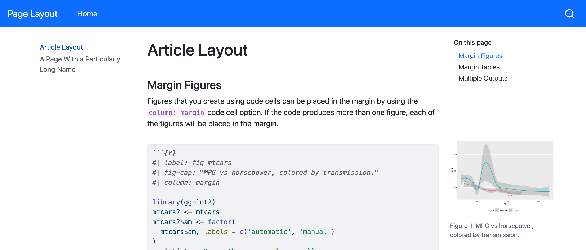
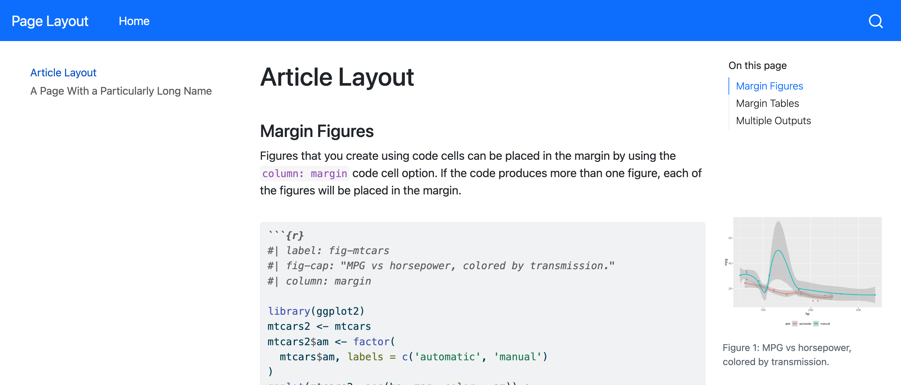
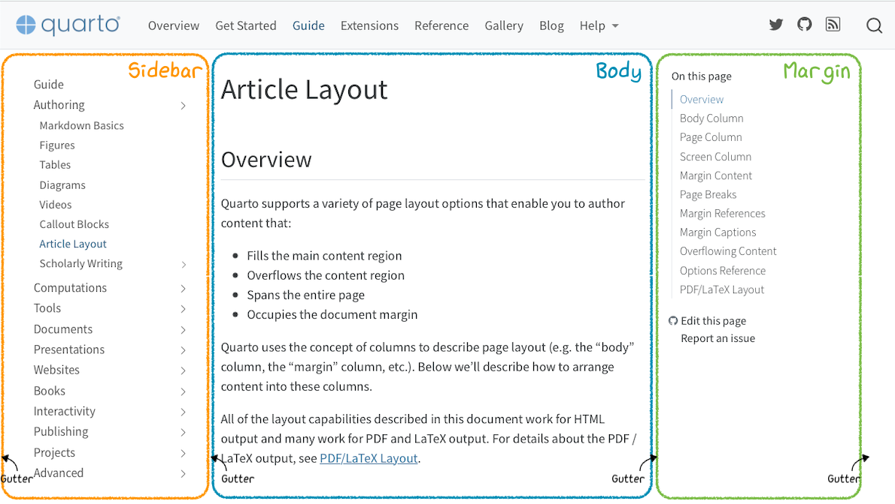
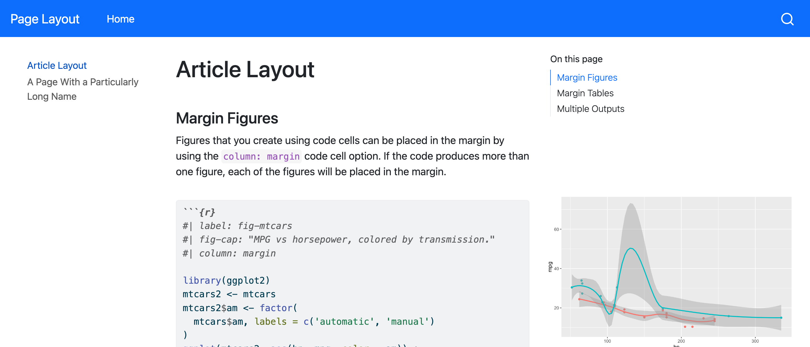

Quarto provides a default layout for HTML pages that should work well for many documents. However, if the default layout isn’t working for your content, you can adjust it.
On this page, learn about:
The three high level layout options for your pages in Page Layout.
How to adjust the width of the individual layout components (sidebar, body, margins, and gutter) to fit your content in Grid Customization.
Page Layout
By default Quarto HTML documents display content centered at a width optimized for readability (typically from 600px to 900px wide). While this is a sound default layout for traditional articles, for other types of pages (e.g. landing or index pages) you may want to use other layouts.
The page-layout option can be use to control the layout used. For example:
format:html:page-layout: full
The various page-layout options are described below.
Article
page-layout: article
Article layout provides a content area with a page based grid layout that provides margins, areas for sidebars, and a reading width optimized body region. The precise size of the document regions will vary slightly depending upon the sidebar (if present) and the presence or absence of margin or complex layout elements. To learn more, checkout the guide to Article Layout.
Full
page-layout: full
Full layout uses the article grid system, but automatically expands the content area to use the sidebar and margin region if no content is placed within those regions. This is useful for layouts that don’t need to be constrained to reading width and that will benefit from additional horizontal space (e.g. landing or index pages)
Custom
page-layout: custom
Custom layout provides a simple HTML content container with no default grid system, padding, or margins. The default HTML framing provided will look this this:
<divclass="page-layout-custom"><!-- body content here --></div>
In websites, custom layouts do not include navigation sidebars but do include the site navbar and footer.
CSS Grid
If you are using page-layout: custom, you’ll likely want to utilize the Bootstrap CSS Grid layout system (which is available by default in Quarto documents) for creating more sophisticated layouts.
For example, here’s a simple 2-column grid:
::: {.grid}::: {.g-col-4}This column takes 1/3 of the page:::::: {.g-col-8}This column takes 2/3 of the page::::::
Bootstrap’s CSS Grid system includes facilities for responsiveness, wrapping, nesting, and fine grained customization of column behavior.
Note that this isn’t the traditional Bootstrap grid used in older versions of Bootstrap – rather, it’s a brand new layout system introduced in Bootstrap 5.1 based on the CSS Grid standard. Quarto uses this newer system because it has more sophisticated layout capabilities akin to what LaTeX offers for print documents.
You can control the width of the layout components in HTML documents with YAML options and SCSS. For example, if long entries in a sidebar are being wrapped, it may make sense to increase the width of sidebar:

Default Layout

Wider Sidebar
This change can be made by adding the grid option to the _quarto.yml file, increasing the sidebar-width from its default of 250px:
_quarto.yml
format:html:grid:sidebar-width: 350px
There are four variables to control the four components of the layout: the sidebar, the body, the margin, and the gutters.
The rest of this section describes these components, and their default values, as well as how to customize them either with YAML or SCSS variables. You can also find Additional Examples of customization in action.
HTML Page Layout
Quarto HTML documents are arranged in a structure composed of a sidebar on the left, the body of the document, the margin of the document on the right, and the space between these elements, known as gutters. This is illustrated below:

The width of these four components is controlled by four variables. These variables, along with their default values are:
Default values for the width of layout components
Element
Size
sidebar-width
250px
body-width
800px
margin-width
250px
gutter-width
1.5em
The values of these variables don’t directly specify the display width of the corresponding component, instead they specify a maximum base value. The maximum values are scaled to create minimum values, and together they are used to compute the size and position of each component across different layout types (fixed vs. floating), responsive sizes (large screen vs. mobile size), and page contents (margin vs. no margin content).
Customizing Component Widths
You can control the component width variables using YAML or SCSS variables. To set these options in YAML, you may use the grid option :
Customizing the layout of pages that are part of a Quarto website with YAML should happen at the site level in _quarto.yml. For HTML documents that aren’t part of a website, these options could also be set in the YAML at the top of the document.
// The left hand sidebar$grid-sidebar-width: 300px !default;// The main body$grid-body-width: 900px !default;// The right hand margin bar$grid-margin-width: 300px !default;// The gutter that appears between the above columns$grid-column-gutter-width: 1.5rem !default;
sidebar-width, body-width, and margin-width should be specified in pixels (px) as the values will be used when computing other sizes. Requiring pixel sizing is a limitation of our approach to the Quarto’s layout, but also typically makes sense since the overall document width is usually tied to the browser size and responsive breakpoints rather than font size or other relative measures.
gutter-width may be specified in pixels or other units such as em or rem which are responsive to the document font size.
Additional Examples
Increasing the margin width may make sense on a website that has many figures or tables in the margin. For example, this YAML increases the margin-width by 200px over the default value:
format:html:grid:margin-width: 450px
Default Layout

Wider Margin
The effect of changing margin-width without changing body-width is to increase the overall page width (there is less white space on the far left and right of the page). Alternatively, to keep the overall page width the same body-width can be decreased by the same amount as margin-width increased: